전자계산기제어산업기사(구) (2005-09-04 기출문제)
1과목: 프로그래밍일반
1. C언어에서 문장을 끝마치기 위해 사용되는 기호는?
- ,
- .
- ;
- :
(정답률: 알수없음)

2. 고급언어를 입력으로 받아 다른 기종의 기계코드를 생성하는 번역기는 무엇인가?
- 컴파일러
- 인터프리터
- 프리프로세서
- 크로스 컴파일러
(정답률: 알수없음)
3. 작성된 표현식이 BNF의 정의에 의해 바르게 작성되었는지를 확인하기 위해 만든 트리로서, 루트, 중간, 단말 노드로 구성되는 것은?
- 구조트리
- 중간트리
- 파스트리
- 정의트리
(정답률: 알수없음)
4. BNF 표기법 기호 중 “택일”을 의미하는 것은?
- |
- ::=
- < >
- { }
(정답률: 알수없음)
5. 서브루틴 호출(subrutine call) 처리 작업시 복귀주소를 저장하고 조회하는 용도에 적합한 자료 구조는?
- 데크
- 큐
- 스택
- 연결리스트
(정답률: 알수없음)
6. 교착상태 발생의 필요조건으로 옳지 않은 것은?
- 상호 배제 조건
- 점유 및 대기 조건
- 환형 대기 조건
- 선점 조건
(정답률: 알수없음)
7. 운영체제를 기능에 따라 분류할 때, 제어 프로그램에 해당하지 않는 것은?
- supervisor program
- data management program
- service program
- job control program
(정답률: 알수없음)
8. 스트림 자료 활용의 예가 많은 언어는?
- COBOL
- Ada
- C
- SNOBOL 4
(정답률: 알수없음)
9. 시스템 타이머에서 일정한 시간이 만료된 경우나 오퍼레이터가 콘솔상의 인터럽트 키를 입력한 경우 발생하는 인터럽트는?
- 입/출력 인터럽트
- 외부 인터럽트
- SVC 인터럽트
- 프로그램 검사 인터럽트
(정답률: 알수없음)
10. C언어에서 비트 단위 논리 연산자의 종류에 해당되지 않는 것은?
- ^
- ~
- &
- ?
(정답률: 알수없음)
11. 이항(binary) 연산이 아닌 것은?
- xor
- or
- and
- complement
(정답률: 알수없음)
12. 수식에서의 순서제어 중 다음 설명에 해당하는 표기법은?
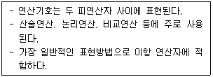
- 중위(infix) 표기법
- 전위(prefix) 표기법
- 후위(posfix) 표기법
- 혼합(mixed-fix) 표기법
(정답률: 알수없음)
13. 바인딩 시간의 종류와 무관한 것은?
- 실행시간(execution time)
- 번역시간(translation time)
- 언어 정의 시간
- 프로그램 로드 시간
(정답률: 알수없음)
14. C 언어에서 사용되는 이스케이프 시퀀스(escape - sequence)와 그 의미의 연결이 옳지 않은 것은?
- \n : new line
- \b : null character
- \t : tab
- \r : carriage return
(정답률: 알수없음)
15. 시스템 프로그래밍에 가장 적합한 언어는?
- C
- Cobol
- Fortran
- Pascal
(정답률: 알수없음)
16. 로더의 기능 중 외부 프로그램을 연결시키는 기능은?
- 할당
- 링킹
- 재배치
- 로딩
(정답률: 알수없음)
17. C 언어의 제어구조(control structure)에서 문장을 실행한 다음, 조건을 검사하여 반복 실행의 여부를 결정하는 문은?
- for 문
- while 문
- do - while 문
- switch - case 문
(정답률: 알수없음)
18. C 언어의 레지스터(register) 변수에 관한 설명으로 옳지 않은 것은?
- 함수 또는 블록 내에서 선언되고 사용되는 변수이다.
- 레지스터 변수는 보통 루프를 제어하는 변수를 쓸 때 사용한다.
- 주소의 참조 연산자로 사용할 수 있다.
- 레지스터 개수가 한정되어 있어서, 사용 가능한 레지스터 개수 만큼만 레지스터 변수로 할당되고 나머지는 자동(automatic) 변수로 할당된다.
(정답률: 알수없음)
19. C 언어의 데이터형이 아닌 것은?
- long
- unsigned
- char
- integer
(정답률: 알수없음)
20. 절대로더에서 재배치의 기능을 수행하는 것은?
- 어셈블러
- 프로그래머
- 로더
- 컴파일러
(정답률: 알수없음)
2과목: 전자계산기구조
21. 주 메모리로부터 일정한 크기의 명령어나 데이터가 읽혀지는 동작이 완료되는 순간까지의 시간을 무엇이라 하는가?
- access time
- cycle time
- work time
- seek time
(정답률: 알수없음)
22. 정수 표현에서 음수를 나타내는데 부호화된 2의 보수법이 1의 보수법에 비해 장점은?
- 산술 연산 속도가 빠른 점과 양수 표현이 좋다.
- 2의 보수에서는 carry가 발생하면 무시한다.
- 양수 표현이 유리하다.
- 보수 취하기가 쉽다.
(정답률: 알수없음)
23. 가상기억장치에서 주기억장치로 자료의 페이지를 옮길 때 주소를 조정해 주어야 하는데 이것을 무엇이라 하는가?
- spooling
- blocking
- mapping
- buffering
(정답률: 알수없음)
24. 16진수 2B.58을 10진수로 변환하면?
- 43.3125
- 43.34375
- 33.34375
- 32.3125
(정답률: 알수없음)
25. 에러 검출과 자동 정정이 가능한 코드는?
- Gray 코드
- ASCII 코드
- 8421 코드
- Hamming 코드
(정답률: 알수없음)
26. 다음 출력 결과는?
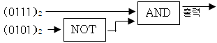
- (0000)2
- (0101)2
- (1111)2
- (0010)2
(정답률: 알수없음)
27. 인스트럭션(Instruction)의 구성 중 오퍼랜드(Operand) 부분에 포함되지 않는 것은?
- 자료(Data)의 주소
- 자료(Data)
- 주소를 위한 정보(Information)
- 명령의 형식
(정답률: 알수없음)
28. 일반적으로 컴퓨터는 3가지의 명령 형식을 가지고 있다. 다음 중 거리가 먼 것은?
- ALU 참조 인스트럭션
- 메모리 참조 인스트럭션
- 입ㆍ출력 인스트럭션
- 레지스터 참조 인스트럭션
(정답률: 알수없음)
29. 다음과 같은 명령어를 직접 주소지정 방식으로 수행할 때 연산될 data는?
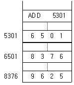
- 5301
- 6501
- 8376
- 9625
(정답률: 알수없음)
30. 32×16 RAM을 구성하기 위해서는 4×4 RAM 칩 몇 개가 필요한가?
- 16개
- 32개
- 40개
- 64개
(정답률: 알수없음)
31. 35를 2진화 10진수(BCD)로 나타낸 것은?
- (00110011)BCD
- (00100000)BCD
- (00110101)BCD
- (00100101)BCD
(정답률: 알수없음)
32. 다음 ( ) 안에 알맞은 것은?
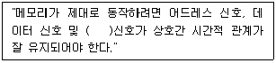
- 제어
- 호출
- 액티브(active)
- 상태(state)
(정답률: 알수없음)
33. 다음 중 바이너리 연산인 것은?
- 논리 시프트
- 순환 시프트
- 보수
- 산술연산
(정답률: 알수없음)
34. 패치 사이클(fetch cycle)에 해당하지 않는 것은?
- 실제로 명령을 이행한다.
- 다음에 실행 할 명령의 기억장소(address)를 세트(set) 시킨다.
- 주기억장치의 지점 장소(address)로부터 명령을 끄집어 내어 명령 레지스터에 옮긴다.
- 명령의 오퍼레이션(operation)부를 명령 해독기에 세트시켜 해독한다.
(정답률: 알수없음)
35. 0-주소 명령 형식의 특징에 관계 없는 것은?
- 이 형식을 사용하는 컴퓨터는 연산을 위해 스택(stack)을 가지고 있다.
- 기억장치의 주소지정이 필요없다.
- 입력자료의 출처나 연산 결과를 기억시킬 장소가 정해져 있다.
- 연산 대상이 되는 2개의 주소를 표현하고, 연산 결과를 그 중 한 곳에 저장한다.
(정답률: 알수없음)
36. 전원을 차단해도 기억되어 있는 내용이 소멸하지 않는 것은?
- SDRAM
- Rambus DRAM
- EEPROM
- 캐시 메모리
(정답률: 알수없음)
37. 어떤 컴퓨터에서 각 명령어 사이클이 4단계로 이루어 진다고 가정 했을 경우 옳지 않은 것은?
- 명령어를 실행한다.
- 명령어를 decoding 한다.
- 명령어를 메모리로부터 fetch 한다.
- 직접 주소 방식이면 메모리로부터 유효 번지를 읽어 온다.
(정답률: 알수없음)
38. 다음의 실행 주기(execution cycle)는 어떤 명령을 나타내는 것인가?
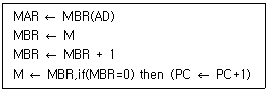
- JMP
- AND
- ISZ
- BSA
(정답률: 알수없음)
39. 다음 설명 중 옳지 않은 것은?
- 누산기는 연산 결과를 임시로 저장하는 레지스터이다.
- 입.출력장치는 주변장치에 해당된다.
- 레지스터에서 기억장치로 정보를 옮기는 것을 로드(load)라 한다.
- 기억장치내의 데이터를 다른 기억장치로 옮기는 것을 전송(move)이라 한다.
(정답률: 알수없음)
40. EBCDIC 부호에서 숫자를 나타내는 경우, 존(Zone) 비트는?
- 0000
- 1111
- 0101
- 1110
(정답률: 알수없음)
3과목: 마이크로전자계산기
41. DRO(Destructive Read Out) 메모리의 설명 중 가장 옳지 않은 것은?
- 재충전(Refresh)이 필요한 메모리이다.
- 재저장(Restoration) 과정이 필요한 메모리이다.
- 자료를 읽는 순간 기억된 자료가 지워지는 메모리이다.
- 대표적인 메모리로 마그네틱 코어(Magnetic Core)를 들 수 있다.
(정답률: 알수없음)
42. 어큐뮬레이터(Accumulator)에 대해서 올바르게 설명한 것은?
- 레지스터의 일종으로 산술 연산 또는 논리 연산의 결과를 일시적으로 기억한다.
- 연산 명령의 순서를 기억하는 장치이다.
- 연산 명령이 주어지면 해독하고 기억하는 장소이다.
- 연산 보호를 해독하는 장치이다.
(정답률: 알수없음)
43. 다음의 메모리 중 Access Time이 매우 고속으로 CPU의 속도에 근접하는 메모리는?
- CACHE Memory
- DRAM
- ROM
- UV-EPROM
(정답률: 알수없음)
44. 다음에서 보조 기억장치인 것은?
- RAM
- ROM
- EPROM
- 자기 디스크
(정답률: 알수없음)
45. 주기억 장치에 관한 설명 중 가장 옳지 않은 것은?
- 주기억장치의 용량은 일반적으로 byte로 나타낸다.
- 주기억 장치에는 program과 data가 기억된다.
- 주기억 장치의 성능은 기억 용량, access time, 신뢰도 등에 의해 결정된다.
- sequential access memory는 주기억 장치로 많이 사용된다.
(정답률: 알수없음)
46. 알고리즘(algorithm)에 대하여 올바르게 설명한 것은?
- 플로우차트(flowchart)이다.
- 해석 프로그램의 총칭을 말한다.
- 컴파일러(compiler) 언어의 일종이다.
- 어떤 문제의 해를 구하기 위한 일련의 명령을 말한다.
(정답률: 알수없음)
47. 8 bit data bus와 16 bit address bus를 갖는 마이크로 컴퓨터의 최대 주기억 용량은?
- 256 byte
- 32 Kbyte
- 64 Kbyte
- 128 Kbyte
(정답률: 알수없음)
48. 현재 수행되고 있는 연산에서 사용되는 메모리 위치 또는 I/O장치의 어드레스를 저장하는 역할을 하는 레지스터는?
- Data register
- MAR
- Accumulator
- Program Counter
(정답률: 알수없음)
49. 다음 마이크로 동작들은 어떤 사이클(cycle)을 나타내는가?
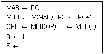
- fetch cycle
- indirect cycle
- execute cycle
- interrupt cycle
(정답률: 알수없음)
50. 다음 채널 방식 중 저속인 입ㆍ출력 장치의 자료 전송에 사용되는 것은?
- 입ㆍ출력 선택 채널
- 입ㆍ출력 블록 다중 채널
- 버스트(Burst) 방식
- 바이트 다중 방식
(정답률: 알수없음)
51. 256×8 PROM 칩을 조합하여 총 1024×8의 용량으로 하려면 몇 개의 PROM 칩이 필요하며, 이때 몇 개의 어드레스 선이 요구되는가?
- 2개, 어드레스 선 수 = 8
- 2개, 어드레스 선 수 = 10
- 4개, 어드레스 선 수 = 8
- 4개, 어드레스 선 수 = 10
(정답률: 알수없음)
52. 마이크로프로세서에 대한 설명으로 옳지 않은 것은?
- ALU의 기능을 갖는다.
- 입ㆍ출력장치를 포함한다.
- 각종 제어기기에 응용된다.
- 한 개의 IC칩으로 된 CPU를 가리킨다.
(정답률: 알수없음)
53. 마이크로프로세서에서 지정된 주소의 기억장치에 기억되어 있는 데이터를 누산기에 옮겨 놓는 역할을 하는 명령어는?
- STA
- PUSH
- POP
- LDA
(정답률: 알수없음)
54. 주소지정방식(Addressing Mode)중에서 오퍼랜드가 묵시적으로 명령의 정의에 따라 함축되어 있는 방식은?
- Implied Mode
- Register Mode
- Direct Address Mode
- Indexed Address Mode
(정답률: 알수없음)
55. 입ㆍ출력 과정에서 채널 제어기가 임의의 시점에서 볼 때 마치 어느 한 입ㆍ출력 장치를 전용인 것처럼 운영하는 채널을 무엇이라 하는가?
- 가변 채널
- 셀렉터 채널
- 고정 채널
- 멀티플렉서 채널
(정답률: 알수없음)
56. Branch나 Jump 명령이 실행되면 어느 레지스터의 값이 변하는가?
- MAR(Memory Address Register)
- MBR(Memory Buffer Register)
- PC(Program Counter)
- Accumulator
(정답률: 알수없음)
57. 주(main) 프로그램과 부(sub) 프로그램을 논리에 맞게 결합하여 실행 가능한 프로그램으로 만들어 주는 것은?
- Decoder
- Encoder
- Accumulator
- Linkage editor
(정답률: 알수없음)
58. CPU에 의하여 지정된 interface가 받는 command가 아닌 것은?
- control
- test
- data 입력
- interrupt
(정답률: 알수없음)
59. 제어 프로그램에 속하는 것은?
- 시스템 모니터(system monitor)
- 텍스트 에디터(text editor)
- 연계 로더(linking loader)
- 디버거(debugger)
(정답률: 알수없음)
60. DMA 방식의 설명으로 옳지 않은 것은?
- 프로그램 제어방식에 비하여 고속의 데이터 전송이 가능하다.
- 채널과 달리 하나의 입ㆍ출력 명령으로 다수의 블록을 전송할 수 있다.
- 사이클 스틸(Cycle Steal)을 발생하여 입ㆍ출력을 수행한다.
- 입ㆍ출력이 완료되면 DMA 제어기는 중앙처리장치에 인터럽트를 걸어 입ㆍ출력 종료를 알린다.
(정답률: 알수없음)
4과목: 논리회로
61. 입력 신호에 의해 상태를 바꾸도록 지시할 때까지 현재의 2진 상태를 그대로 유지해 주는 회로는?
- 플립플롭
- 디코더
- 인코더
- 콘덴서
(정답률: 알수없음)
62. 16bit를 1word로 하는 code에서 op-code로 6bit를 사용하면 몇 가지 instruction이 가능한가?
- 30
- 32
- 64
- 128
(정답률: 알수없음)
63. 다음 회로의 기능은?
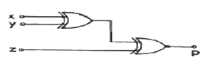
- 3비트 홀수 패리티 발생기
- 3비트 비교기
- 3비트 짝수 패리티 발생기
- 3비트 감산기
(정답률: 알수없음)
64. 그림의 회로를 논리식으로 표시한 것 중 옳은 것은?
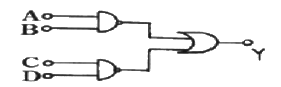
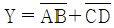
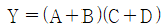
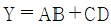
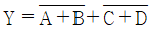
(정답률: 알수없음)
65. 다음 회로는 무엇인가?
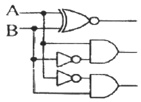
- 가산기
- 디코더
- 비교기
- 인코더
(정답률: 알수없음)
66. 8진수 246을 10진수로 옳게 고친 것은?
- 128
- 160
- 166
- 182
(정답률: 알수없음)
67. 다음 진리치표와 같은 flip-flop을 나타내는 것은? (단, X는 don't care)
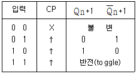
- D flip-flop
- RS flip-flop
- JK flip-flop
- Clock RS flip-flop
(정답률: 알수없음)
68. (4)10을 그레이 코드(Gray code)로 변환하면?
- 0100(G)
- 1100(G)
- 0110(G)
- 0010(G)
(정답률: 알수없음)
69. 모드-19(MOD-19) 계수기를 만들려면 적어도 몇 개의 플립플롭이 소요되는가?
- 3
- 4
- 5
- 6
(정답률: 알수없음)
70. 다음 논리회로 법칙 중 서로 잘못 연결된 것은?
- 교환법칙 : A+B = B+A
- 결합법칙 : Aㆍ(B+C) = AㆍB+AㆍC
- 분배법칙 : A+(BㆍC) = (A+B)ㆍ(A+C)
- 드모르간의 법칙 : (AㆍB)′=A′+B′
(정답률: 알수없음)
71. 전감산기의 결과는 차(difference)를 나타내는 D와 상위 자리에서 빌려오는 것(Borrow)을 나타내는 B가 있다. D를 최소항의 합으로 올바르게 표현한 것은?
- D(x, y, z) = ∑(0, 2, 4, 6)
- D(x, y, z) = ∑(0, 2, 4, 7)
- D(x, y, z) = ∑(1, 2, 4, 6)
- D(x, y, z) = ∑(1, 2, 4, 7)
(정답률: 알수없음)
72. 다음 Counter의 명칭은?
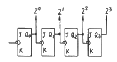
- 비동기식 15진 업카운터
- 비동기식 16진 업카운터
- 동기식 15진 업카운터
- 동기식 16진 업카운터
(정답률: 알수없음)
73. 다음 카르노도의 논리식을 간단히 하면?
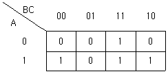
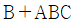
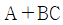
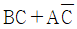
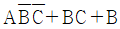
(정답률: 알수없음)
74. 자기 보수(self-complement) 성질을 갖고 있는 코드는?
- BCD Code
- Gray Code
- Shift Counter Code
- 3초과 Code
(정답률: 알수없음)
75. 조합논리회로에 해당되지 않는 것은?
- 비교 회로
- 다수결 회로
- 계수 회로
- 패리티 체크 회로
(정답률: 알수없음)
76. 다음 논리회로의 동작으로 옳은 것은?
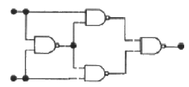
- EX-NOR
- EX-OR
- RS 플립플롭
- Half-Adder
(정답률: 알수없음)
77. Register의 기능은?
- Counter로 사용
- Pulse를 발생
- Data 일시 저장
- 동작 속도 조절
(정답률: 알수없음)
78. 직렬 전송 register와 병렬 전송 register의 장ㆍ단점을 옳게 설명한 것은?
- 직렬 전송 레지스터가 빠르게 동작하나 비경제적이다.
- 직렬 전송 레지스터가 빠르게 동작하나 회로가 복잡하다.
- 병렬 전송 레지스터가 느리게 동작하나 경제적이다.
- 병렬 전송 레지스터가 빠르게 동작하나 회로가 복잡하다.
(정답률: 알수없음)
79. 컴퓨터에서 보수를 사용하는 이유는?
- 가산의 결과를 체크하기 위한 법
- 승산에서 연산 과정을 간단히 하기 위한 법
- 감산에서 보수를 가산법으로 처리하기 위한 법
- 제산에서의 불필요한 과정을 제거시키기 위한 법
(정답률: 알수없음)
80. 시프트 레지스터의 특징으로 옳지 않은 것은?
- 플립플롭의 연결 구조가 직렬
- 모든 플립플롭은 공통으로 연결된 클럭 입력을 사용
- 레지스터에 저장된 2진 정보를 이동시킬 수 있는 레지스터
- 본질적으로 클럭 펄스에 따라 미리 정해진 순서대로 상태를 변화시키는 레지스터
(정답률: 알수없음)
5과목: 정보통신개론
81. 다음 중 디지털 전송의 특징이 아닌 것은?
- 신호대 잡음비가 나쁜 전송로에서도 원래의 신호 전송이 가능하며, 아날로그 전송보다 훨씬 적은 대역폭을 요구한다.
- 디지털 전송의 각 재생기는 잡음이 없는 새로운 펄스를 재생할 수 있어, 원래의 신호와 동일한 신호의 전달이 가능하다.
- 적당하게 재생기만 설치되면 장거리 전송이 용이하다.
- LSI, VLSI로 이어지는 기술의 진보로 더욱 발전된다.
(정답률: 알수없음)
82. 비패킷형 단말기들을 패킷교환망에 접속이 가능하도록 데이터를 패킷으로 조립하고, 수신측에서는 분해해주는 것은?
- PAD
- PMS
- PS
- NCC
(정답률: 알수없음)
83. 채널효율을 최대로 하기 위해 블록의 길이를 동적으로 변경할 수 있는 ARQ(Automatic Repeat Request) 방식은?
- 적응적(Adaptive) ARQ
- Stop-And-Wait ARQ
- 선택적(selective) ARQ
- Go-back-N 방식 ARQ
(정답률: 알수없음)
84. 다음 중 동종의 네트워크(LAN)를 상호 연결하는데 사용 되는 것은?
- 모뎀
- 서버
- PAD
- 브리지
(정답률: 알수없음)
85. 다음 중 전송속도에 대한 설명으로 틀린 것은?
- 보(baud)는 초당 발생한 신호의 변화 횟수를 말한다.
- bps는 초당 전송된 비트수를 말한다.
- 2비트가 한 신호단위인 경우 1200 bps는 2400 baud가 된다.
- 변조속도의 단위로 보(boad)를 사용한다.
(정답률: 알수없음)
86. 광의적인 정보통신의 의미를 가장 잘 표현한 것은?
- 컴퓨터와 통신회선의 결합으로 전송기능에 통신처리 기능이 추가된 데이터 통신을 말한다.
- 컴퓨터와 통신기술의 결합에 의하여 통신처리기능은 물론이고, 정보처리기능에 정보의 변환, 저장과정이 추가된 형태의 통신이다.
- 정보통신망을 이용하여 체계적인 정보의 전송을 위한 통신을 말한다.
- 멀티미디어에 의한 복합적인 통신을 말한다.
(정답률: 알수없음)
87. 인터넷에서 사용되고 있는 통신 프로토콜은?
- IEEE 802
- TCP/IP
- SNA
- 10 Base T
(정답률: 알수없음)
88. ITU-T에서 제안한 데이터통신에 관련된 표준안은?
- D시리즈와 E시리즈
- P시리즈와 Q시리즈
- V시리즈와 X시리즈
- R시리즈와 U시리즈
(정답률: 알수없음)
89. ISDN 채널의 종류와 전송속도의 관계를 나타낸 것으로 옳은 것은?
- B채널 : 64kbps
- D채널 : 48kbps
- H0채널 : 1536kbps
- H11채널 : 384kbps
(정답률: 알수없음)
90. 다음 중 뉴미디어의 특징과 거리가 먼 것은?
- 고속성
- 상호작용성
- 쌍방향성
- 획일성
(정답률: 알수없음)
91. 다음 중 회선교환(Circuit Switching)방식의 특징에 해당하는 것은?
- 고정된 대역폭 전송방식이다.
- 전용선로가 없다.
- 패킷을 이용한 전송방식이다.
- 호출된 자국이 교신 중일 때 busy 신호가 없다.
(정답률: 알수없음)
92. 다음 중 시분할 다중화에 대한 설명으로 옳은 것은?
- 대역폭의 이용도가 높아 고속 전송에 용이하다.
- 전송속도가 낮은 부채널의 신호를 서로 다른 주파수 대역으로 변조한다.
- 비동기식 데이터만을 다중화 하는데 사용한다.
- 부채널간의 상호간섭을 방지하기 위해 완충지역으로 보호 대역이 필요하다.
(정답률: 알수없음)
93. 다음 중 미국의 군사용방공시스템으로 사용된 최초의 데이터 통신시스템은?
- ARPA
- CTSS
- SABRE
- SAGE
(정답률: 알수없음)
94. 다음 중 동기식 전송방식의 특징이 아닌 것은?
- 데이터 묶음의 앞쪽에 동기문자가 온다.
- 타이밍 신호는 모뎀, 터미널 등에 의해 공급된다.
- 전송속도가 보통 200[bps]를 넘지 않는 저속의 경우에 사용된다.
- 동기문자는 송신측과 수신측이 동기를 이루도록하는 목적으로 사용한다.
(정답률: 알수없음)
95. 종합정보통신망이 제공하는 베어러 서비스에 해당하는 것은?
- G4 FAX
- TV 화상회의
- 비디오텍스
- 회선교환
(정답률: 알수없음)
96. 통신 프로토콜의 기능과 그 기법을 서로 잘못 연결한 것은?
- 에러 제어 - ARQ
- 순서화 - 폴링/셀렉션
- 흐름 제어 - Sliding Window
- 동기 방식 - 비동기식/동기식 전송
(정답률: 알수없음)
97. 아날로그 컬러 TV 방송방식에 대한 국제표준규격이 아닌 것은?
- SECAM
- NTSC
- PAL
- HDTV
(정답률: 알수없음)
98. 다음 중 LAN의 기본적인 회선망의 형태가 아닌 것은?
- 스타형
- 버스형
- 베이스밴드형
- 링형
(정답률: 알수없음)
99. LAN(Local Area Network)에서 CSMA/CD방식의 특징 중 옳지 않은 것은?
- IEEE 802.3의 표준규약이다.
- 버스형 근거리통신망에 일반적으로 이용된다.
- 트래픽양이 증가하는 경우에도 안정된 동작을 한다.
- 일반적으로 지연시간을 예측할 수 없다.
(정답률: 알수없음)
100. 다음 중 프로토콜의 구성 요소가 아닌 것은?
- 구문(syntax)
- 의미(semantics)
- 순서(timing)
- 접속(connection)
(정답률: 알수없음)